Selected Publications [ Full List ] [ Google Scholar ] [ Github: MCG-NJU ]
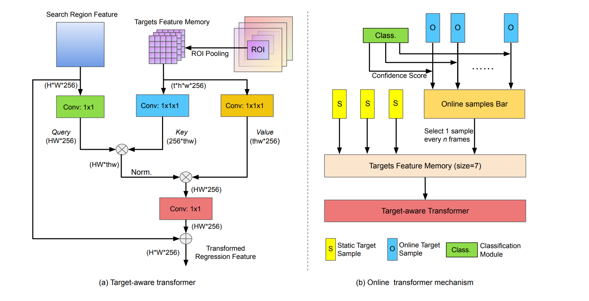

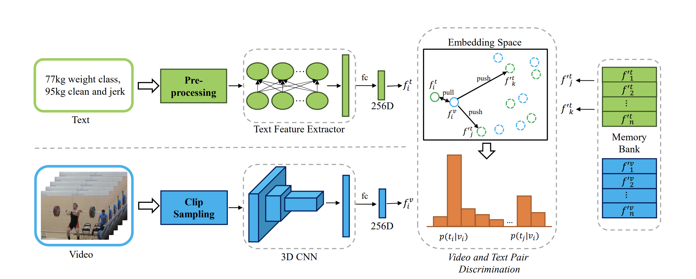
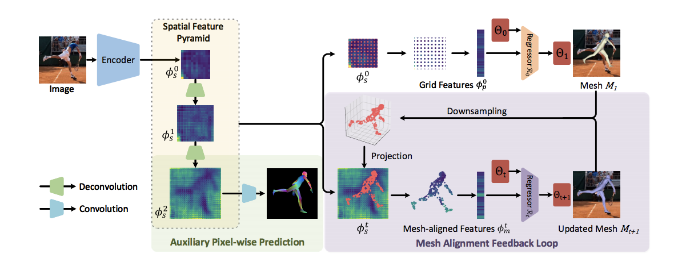
3D Human Pose and Shape Regression with Pyramidal Mesh Alignment Feedback Loop
H. Zhang, Y. Tian, X. Zhou, W. Ouyang, Y. Liu, L. Wang, Z. Sun
in IEEE International Conference on Computer Vision (ICCV), 2021.
[ Paper ] [ Code ] [ Project Page ]
H. Zhang, Y. Tian, X. Zhou, W. Ouyang, Y. Liu, L. Wang, Z. Sun
in IEEE International Conference on Computer Vision (ICCV), 2021.
[ Paper ] [ Code ] [ Project Page ]
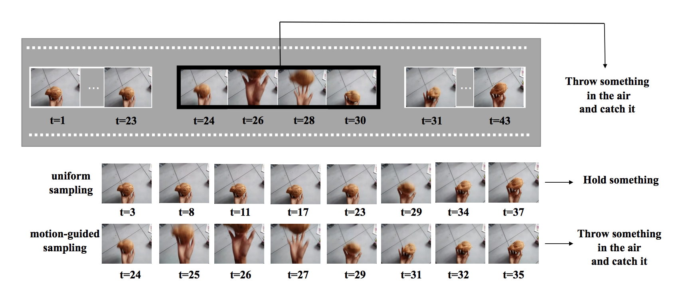MGSampler: An Explainable Sampling Strategy for Video Action Recognition" />
MGSampler: An Explainable Sampling Strategy for Video Action Recognition
Y. Zhi, Z. Tong, L. Wang, G. Wu
in IEEE International Conference on Computer Vision (ICCV), 2021.
[ Paper ] [ Code (soon) ]
A simple, general, and explainable video sampling method.
Y. Zhi, Z. Tong, L. Wang, G. Wu
in IEEE International Conference on Computer Vision (ICCV), 2021.
[ Paper ] [ Code (soon) ]
MultiSports: A Multi-Person Video Dataset of Spatio-Temporally Localized Sports Actions
Y. Li, L. Chen, R. He, Z. Wang, G. Wu, L. Wang
in IEEE International Conference on Computer Vision (ICCV), 2021.
[ Paper ] [ Data ] [ Code ] [ Challenge ]
A high-quality and fine-grained action detection benchmark.
Y. Li, L. Chen, R. He, Z. Wang, G. Wu, L. Wang
in IEEE International Conference on Computer Vision (ICCV), 2021.
[ Paper ] [ Data ] [ Code ] [ Challenge ]
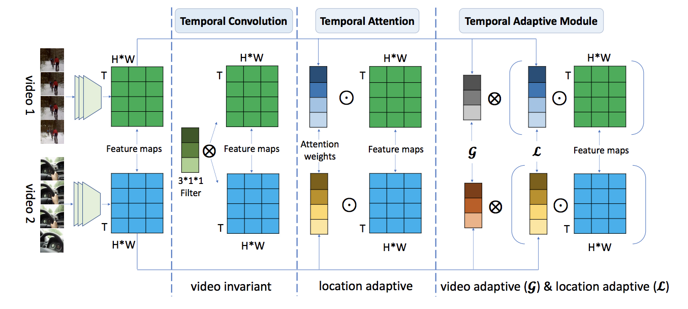
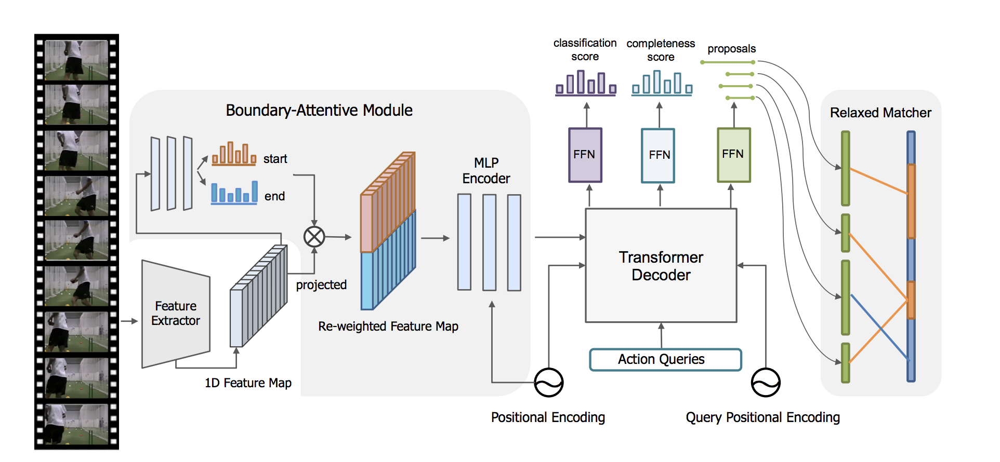
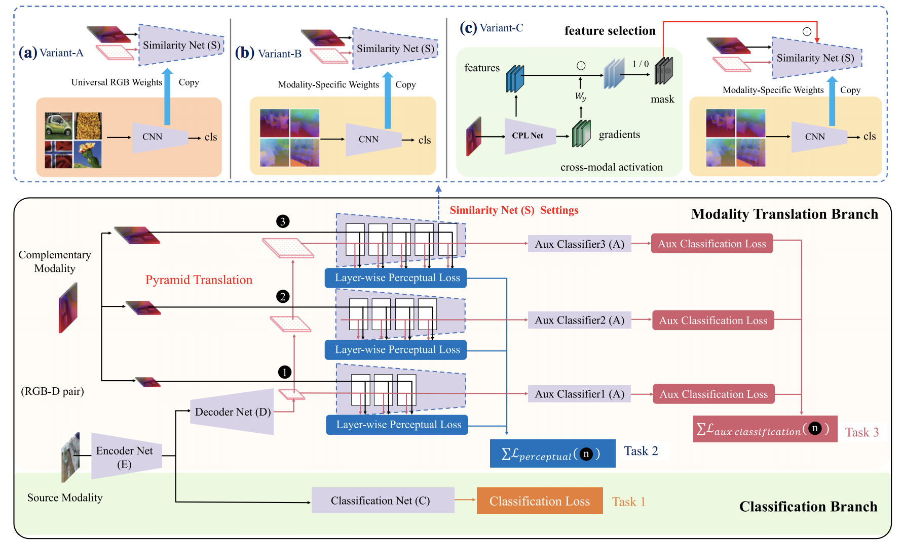
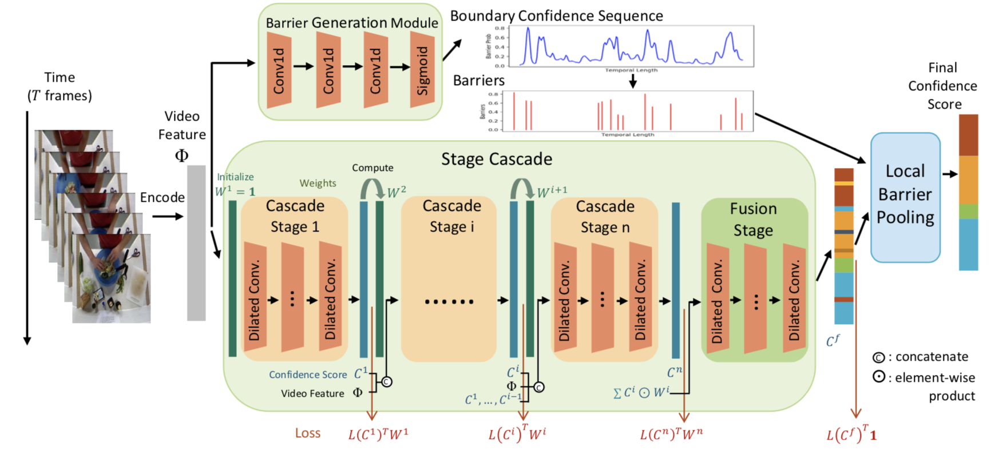
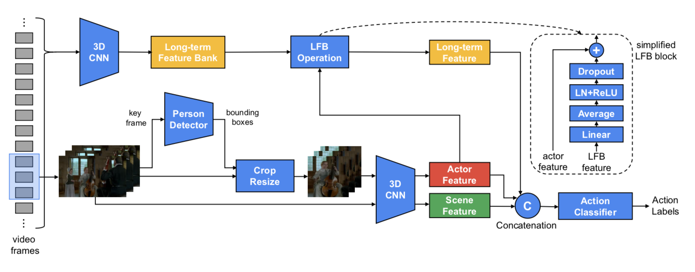


Dynamic Sampling Networks for Efficient Action Recognition in Videos
Y. Zheng, Z. Liu, T. Lu, L. Wang
in IEEE Transactions on Image Processing (TIP), 2020.
[ Paper ]
A dynamic version of TSN for efficient action recognition.
Y. Zheng, Z. Liu, T. Lu, L. Wang
in IEEE Transactions on Image Processing (TIP), 2020.
[ Paper ]
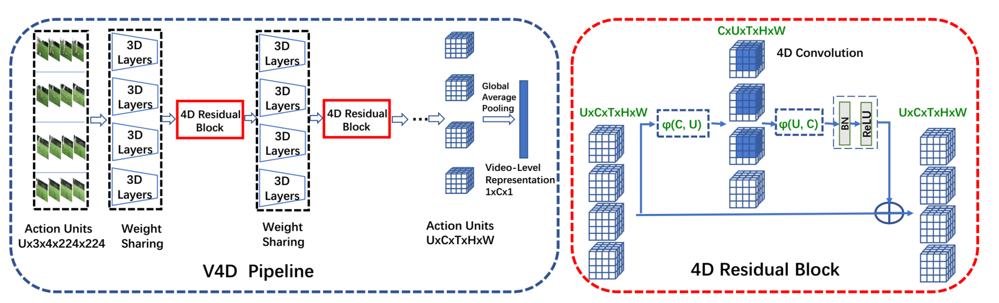
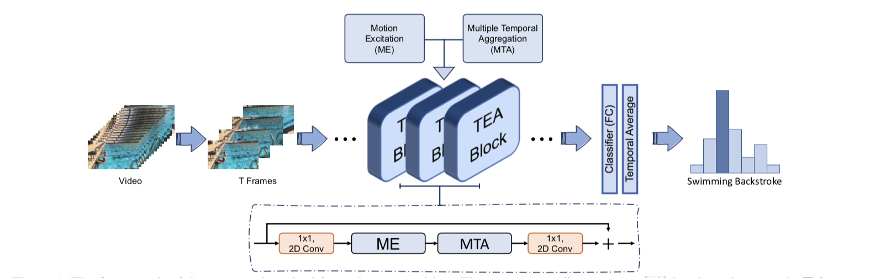
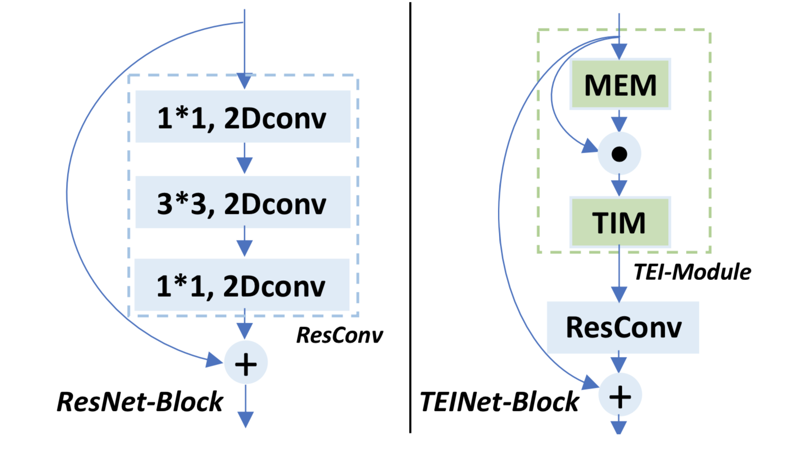
TEINet: Towards an Efficient Architecture for Video Recognition
Z. Liu, D. Luo, Y. Wang, L. Wang, Y. Tai, C. Wang, J. Li, F. Huang, T. Lu
in AAAI Conference on Artificial Intelligence (AAAI), 2020.
[ Paper ]
An efficient architecture for video recognition based on 2D CNN.
Z. Liu, D. Luo, Y. Wang, L. Wang, Y. Tai, C. Wang, J. Li, F. Huang, T. Lu
in AAAI Conference on Artificial Intelligence (AAAI), 2020.
[ Paper ]
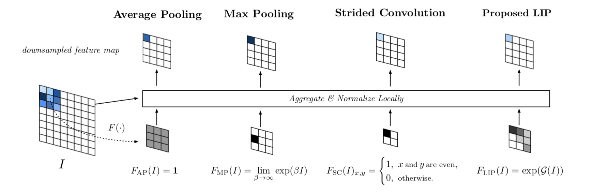
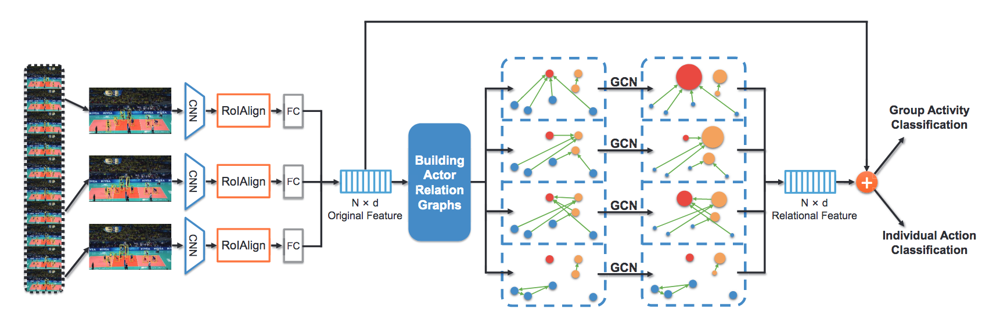
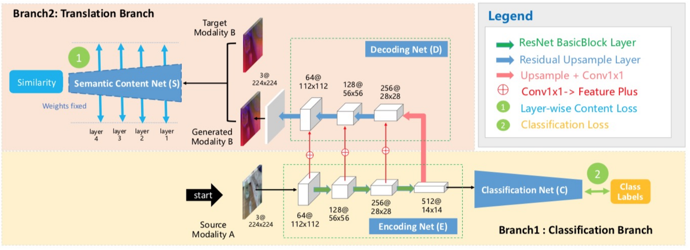
Translate-to-Recognize Networks for RGB-D Scene Recognition
D. Du, L. Wang, H. Wang, K. Zhao and G. Wu
in IEEE Conference on Computer Vision and Pattern Recognition (CVPR), 2019.
[ Paper ] [ Code ] [ Project Page ]
A new cross-modal transfer framework for RGB-D scene recognition.
D. Du, L. Wang, H. Wang, K. Zhao and G. Wu
in IEEE Conference on Computer Vision and Pattern Recognition (CVPR), 2019.
[ Paper ] [ Code ] [ Project Page ]

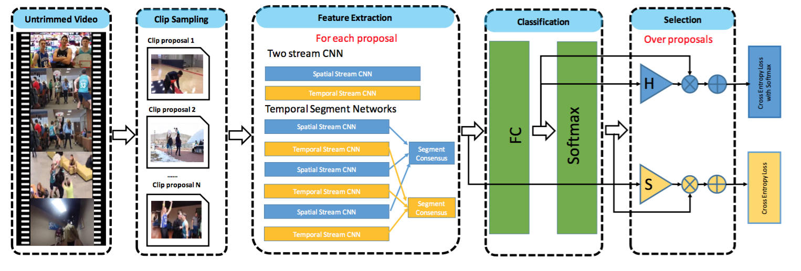
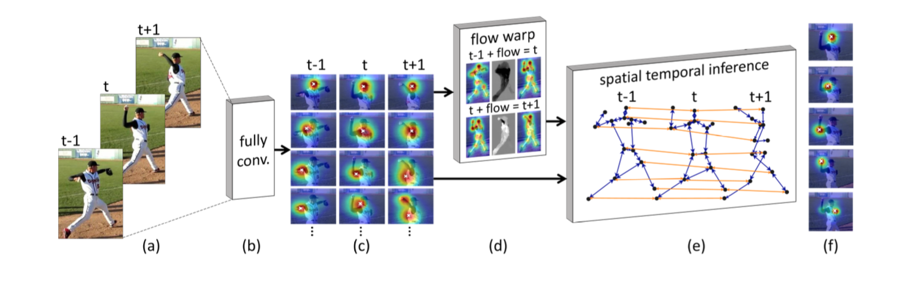
Thin-Slicing Network: A Deep Structured Model for Pose Estimation in Videos
J. Song, L. Wang, L. Van Gool, and O. Hilliges
in IEEE Conference on Computer Vision and Pattern Recognition (CVPR), 2017.
[ Paper ] [ BibTex ][ Project Page ]
End-to-end learning of FCNs and spatio-temporal relational models.
J. Song, L. Wang, L. Van Gool, and O. Hilliges
in IEEE Conference on Computer Vision and Pattern Recognition (CVPR), 2017.
[ Paper ] [ BibTex ][ Project Page ]
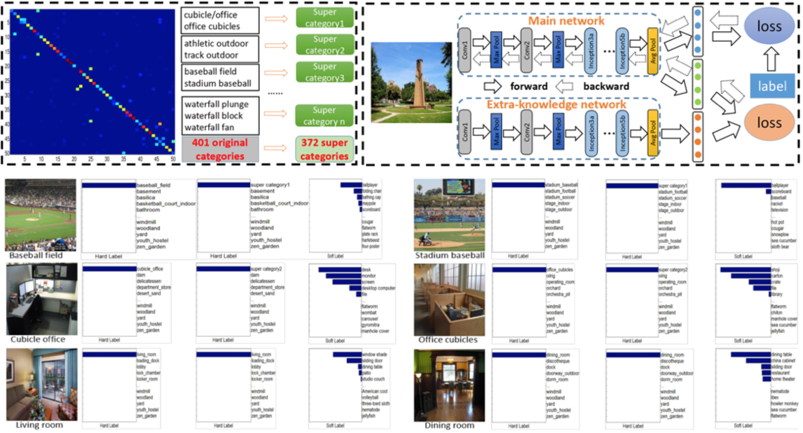
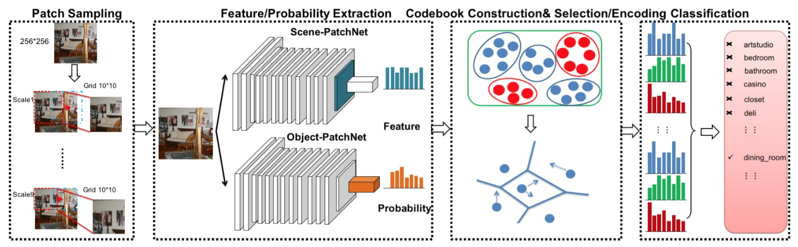
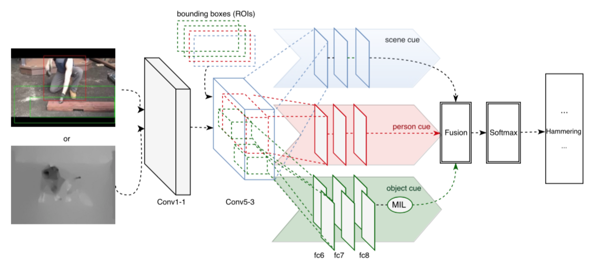
Temporal Segment Networks: Towards Good Practices for Deep Action Recognition
L. Wang, Y. Xiong, Z. Wang, Y. Qiao, D. Lin, X. Tang, and L. Van Gool
in European Conference on Computer Vision (ECCV), 2016.
[ Paper ] [ BibTex ] [ Poster ] [ Code ] [ Journal Version]
Proposing a segmental architecture and obtaining the state-of-the-art performance on UCF101 and HMDB51
L. Wang, Y. Xiong, Z. Wang, Y. Qiao, D. Lin, X. Tang, and L. Van Gool
in European Conference on Computer Vision (ECCV), 2016.
[ Paper ] [ BibTex ] [ Poster ] [ Code ] [ Journal Version]
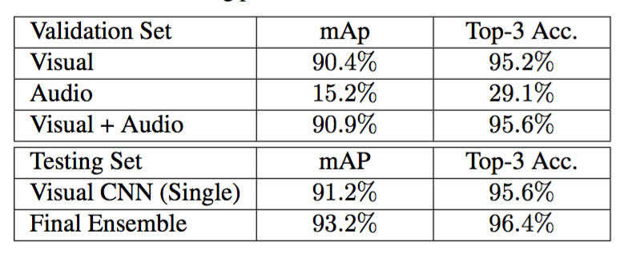
CUHK & ETHZ & SIAT Submission to ActivityNet Challenge 2016
Y. Xiong, L. Wang, Z. Wang, B. Zhang, H. Song, W. Li, D. Lin, Y. Qiao, L. Van Gool, and X. Tang
ActivityNet Large Scale Activity Recognition Challenge, in conjuction with CVPR, 2016.
[ Paper ] [ BibTex ] [ Presentation ] [ Code ]
Winner of ActivityNet challenge for untrimmed video classification
Y. Xiong, L. Wang, Z. Wang, B. Zhang, H. Song, W. Li, D. Lin, Y. Qiao, L. Van Gool, and X. Tang
ActivityNet Large Scale Activity Recognition Challenge, in conjuction with CVPR, 2016.
[ Paper ] [ BibTex ] [ Presentation ] [ Code ]

Actionness Estimation Using Hybrid Fully Convolutional Networks
L. Wang, Y. Qiao, X. Tang, and L. Van Gool
in IEEE Conference on Computer Vision and Pattern Recognition (CVPR), 2016.
[ Paper ] [ BibTex ] [ Poster ] [ Project Page ] [ Code ]
Estimating actionness maps and generating action proposals
L. Wang, Y. Qiao, X. Tang, and L. Van Gool
in IEEE Conference on Computer Vision and Pattern Recognition (CVPR), 2016.
[ Paper ] [ BibTex ] [ Poster ] [ Project Page ] [ Code ]
Real-time Action Recognition with Enhanced Motion Vector CNNs
B. Zhang, L. Wang, Z. Wang, Y. Qiao, and H. Wang
in IEEE Conference on Computer Vision and Pattern Recognition (CVPR), 2016.
[ Paper ] [ BibTex ] [ Poster ] [ Project Page ] [ Code ]
Proposing a real-time action recognition system with two-stream CNNs.
B. Zhang, L. Wang, Z. Wang, Y. Qiao, and H. Wang
in IEEE Conference on Computer Vision and Pattern Recognition (CVPR), 2016.
[ Paper ] [ BibTex ] [ Poster ] [ Project Page ] [ Code ]

Action Recognition with Trajectory-Pooled Deep-Convolutional Descriptors
L. Wang, Y. Qiao, and X. Tang
in IEEE Conference on Computer Vision and Pattern Recognition (CVPR), 2015.
[ Paper ] [ BibTex ] [ Extended Abstract ] [ Poster ] [ Project Page ] [ Code ]
State-of-the-art performance: HMDB51: 65.9%, UCF101: 91.5%.
L. Wang, Y. Qiao, and X. Tang
in IEEE Conference on Computer Vision and Pattern Recognition (CVPR), 2015.
[ Paper ] [ BibTex ] [ Extended Abstract ] [ Poster ] [ Project Page ] [ Code ]